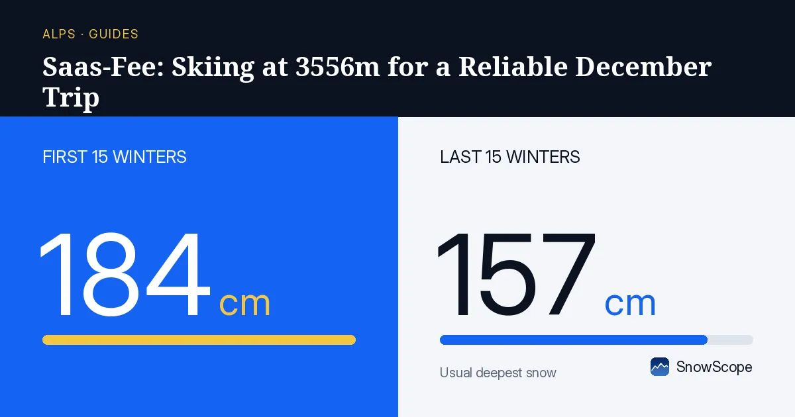

Saas-Fee: Skiing at 3556m for a Reliable December Trip
Saas-Fee has 100 % of past winters with at least 30 cm of snow at the top by mid-December. If you are looking for a trip where the snow is reliable, you have to look at the height of the lifts. This resort reaches 3556 m, which is one of the highest points you can ski in Switzerland.
See the live snow forecast for Saas-Fee in the SnowScope appSnow depth, powder alerts and the 3D map, free.
A ladder of heights from village to top
The mapped ski area in Saas-Fee is built like a ladder that climbs very high into the cold air. The lowest lift starts at 1780 m in the village, and the highest lift reaches 3556 m. This gives the resort a total vertical of 1776 m. There are 30 lifts in total, and the mapped ski area has 48 km of runs. Because the resort is so high, the snow depths change a lot as you go up.
At the base of the lifts, the usual December depth is 34 cm. If you climb to the mid-mountain at 2668 m, that usual depth increases to 68 cm. At the very top, the usual depth for December is 159 cm. In a deep December, the top can have as much as 254 cm, while even a thin December usually has 69 cm at that height. This vertical range is the main reason why the resort stays open when lower places might struggle.

December weeks and snow probability
Our snow history of 46 past winters shows that the timing of your trip matters for the lower slopes. During the first week of December, from 1-7 December, only 33 % of past winters had 30 cm or more of snow at the base. This number rises to 5 winters in 10 for the second week. By the end of the month, from 22-28 December, the chance of having 30 cm at the base is 85 %.
If you look at the mid-mountain at 2668 m, the numbers are much more stable. In the first week of the month, 8 winters in 10 have at least 30 cm of snow. This increases to about 9 winters in 10 for the second week. At the top of the lifts, the snow is almost guaranteed. From 8-14 December onwards, 100 % of past winters in our records had at least 30 cm of snow at 3556 m.
Pass prices in Swiss francs
We checked the costs on the official site for the winter 2026-27 season. An adult 1-day pass for Saas-Fee and Saas-Almagell is CHF 86. If you are planning a longer stay, an adult 6-day pass is CHF 419. These prices are for skiers aged 20 and over.
These prices reflect the high altitude and the lift system provided. While Switzerland is often seen as expensive, these official prices are set for the full winter season. It is important to book through the official site to get these specific rates for the 2026-27 winter.
Saas-Fee or Grimentz-Zinal
When you look at other options in the Valais region, Grimentz-Zinal is a strong alternative. The prices there are lower, with an adult 1-day Val d'Anniviers pass costing CHF 75.00 and a 6-day pass costing CHF 339.00. Grimentz-Zinal also has a larger mapped ski area with 71 km of runs and 23 lifts.
However, the height difference is significant. The highest lift in Grimentz-Zinal is at 2873 m, which is lower than the mid-mountain point of Saas-Fee. In a usual December, the top of Grimentz-Zinal has 99 cm of snow, while Saas-Fee has 159 cm at its top. If you follow the cold, the extra height in Saas-Fee offers more snow security. The usual depth on 15 December at the base of Grimentz-Zinal is 29 cm, compared to 34 cm in Saas-Fee.
A long-view check on snow trends
In our snow history of 46 past winters, we can see how the averages have changed. At the top of the lifts, the December average was 166 cm during the first 15 winters from 1980-81 to 1994-95. In the last 15 winters from 2011-12 to 2025-26, this average was 139 cm. At mid-mountain, the average dropped from 70 cm to 63 cm. Interestingly, the base has stayed at 32 cm in both periods.
Looking at the current season, the snow now on 13 November 2026 is 0 cm at the base and 27 cm at the top. The forecast for the next 7 days is promising, with 34 cm of new snow expected at the base and 80 cm at the top. The two-week outlook for mid-mountain and above shows a range of 35 cm to 70 cm of new snow. This shows how quickly the mountain can change as we move into December.
Tips for skiers
- Stay above the mid-mountain height of 2668 m for the most reliable snow conditions in early December.
- Book your trip for the week of 22-28 December if you want an 85 % chance of at least 30 cm of snow at the village level.
- Check the avalanche bulletin before considering any off-piste skiing, especially at high altitudes.
- Purchase the 6-day Saas-Fee and Saas-Almagell pass for CHF 419 on the official site for the best value.
More maps (external sites)
References and credits
- Saas-Fee/Saastal, official ski pass prices 2026-27 www.saas-fee.ch/en/winter-in-the-saas-valley/ski-pass-prices/saas-fee
- Val d'Anniviers tourism, official ski pass prices 2026-27 www.valdanniviers.ch/fr/Z33617/tarifs-ski-grimentz-zinal
- SnowScope, December snow at three heights and today's snow map snowscope.app/
About these numbers
Snow now and the two-week outlook: SnowScope forecasts (outlook from ECMWF and GFS, a range, not a promise). Lifts and runs: OpenSkiMap mapping. Prices: the official resort pages listed below, read on 2026-11-13; prices can change, check before booking.
Official avalanche bulletins: SLF – WSL Institute for Snow and Avalanche Research
Cite this report
For research, teaching or the press: the numbers and charts are free to reuse under CC BY 4.0 with this citation.
SnowScope (2026), Saas-Fee: Skiing at 3556m for a Reliable December Trip, https://snowscope.app/blog/en/2026/11/saas-fee-december-ski-value-high-altitude-2026.html, accessed 2026-11-14
SnowScope (Atlas Labs). (2026, November 14). Saas-Fee: Skiing at 3556m for a Reliable December Trip. SnowScope snow reports. https://snowscope.app/blog/en/2026/11/saas-fee-december-ski-value-high-altitude-2026.html
BibTeX
@misc{snowscope2026saasfeedecemberskivalueh,
author = {{SnowScope (Atlas Labs)}},
title = {Saas-Fee: Skiing at 3556m for a Reliable December Trip},
year = {2026},
month = nov,
howpublished = {\url{https://snowscope.app/blog/en/2026/11/saas-fee-december-ski-value-high-altitude-2026.html}},
note = {Published 2026-11-14 13:29 UTC; accessed 2026-11-14}
}· CC BY 4.0 · Methods, data and tools →
Saas-Fee: snow and temperature by height, this winter vs last (tools) →
Follow Saas-Fee
Free: a message when fresh snow is coming, and the forecast every morning.
More snow reports

La Plagne's upper slopes forecast 28 cm of fresh snow next week (23–29 Nov), building on 99 cm from earlier. Data from 16 November 2026.

Kitzbühel forecast for 23–29 November: 18 cm at the top, with Friday and Sunday bringing the most snow. Data from 16 November.

Next week Ischgl's top slopes collect 18 cm (forecast 23–29 Nov). Thursday 26 is the heaviest day. Data from 16 November 2026.